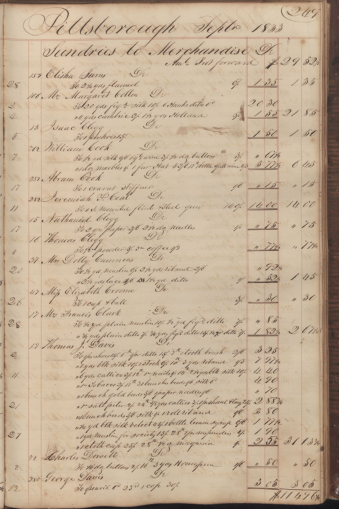
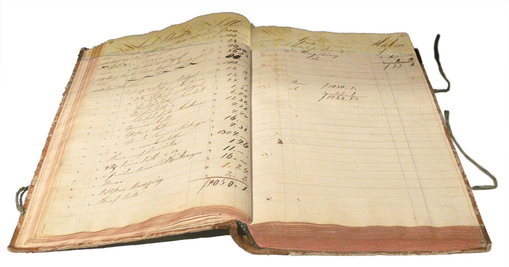
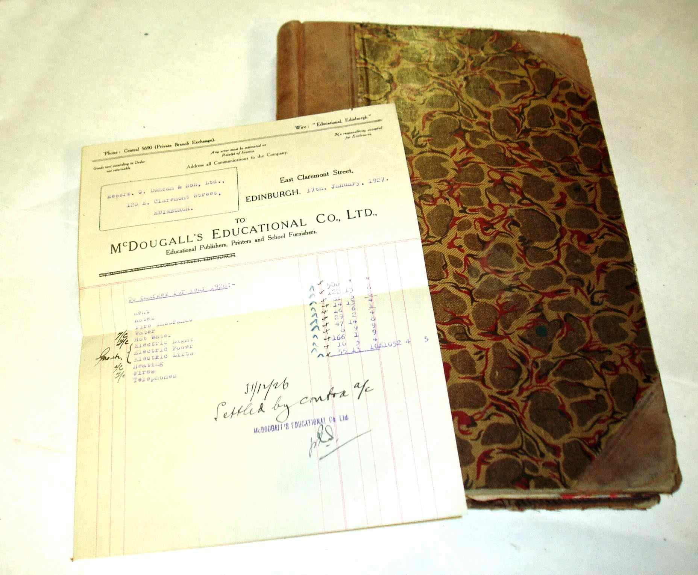
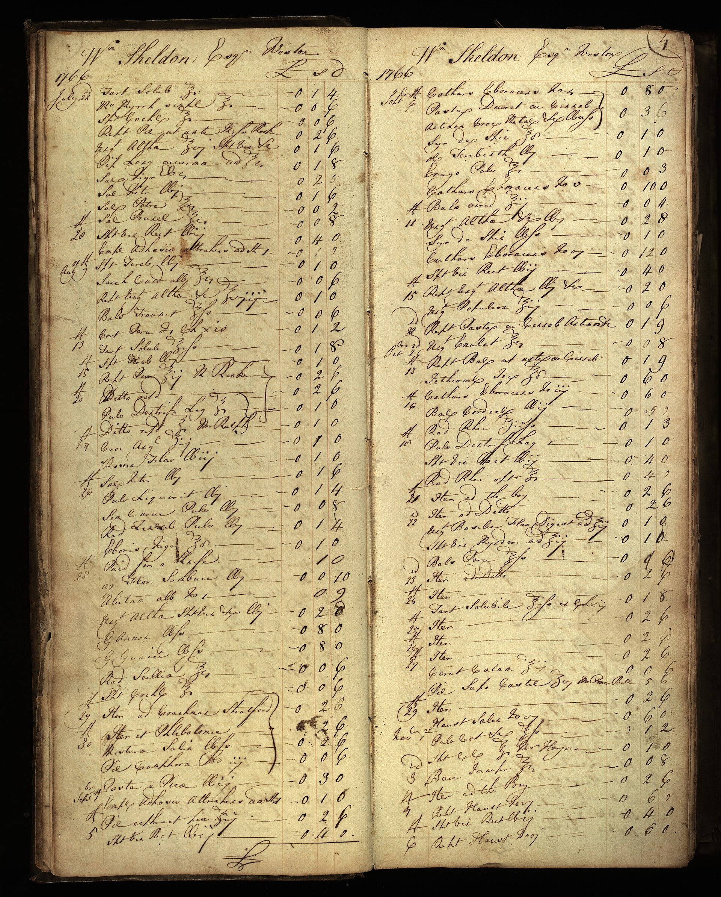

Hangi dönemi hazırlıyorsunuz?
Bir örnek dönem seçin. Liste, dosyaya eklenebilecek belge türlerini gösterir.
Örnek yedek liste: satış belgeleri, alış belgeleri, banka hareketleri ve varsa ücret kayıtları. Dönem seçimi çalıştırılamadığında bu liste görünür kalır.
Bir dönemin kayıtları
Eski ticari defterlerden arşiv görselleri. Bunlar örnek işletmenin belgeleri değildir.




Dosyaya girebilecek belgeler
Nisan 2026 · örnek dönem
- SatışSatış faturaları ve iade belgeleri
- AlışGider faturaları ve masraf belgeleri
- BankaHesap ekstreleri ve tahsilat dökümleri
- ÜcretVarsa puantaj ve ücret değişikliği bilgileri
Örnek belge türleri. İşletmenizin kayıt ve beyan kapsamını mali müşaviriniz belirler.
Dosyanız hazır.
Seçtiğiniz döneme ait belgeleri kontrol edip mali müşavirinize iletin.
Başka dönem seç